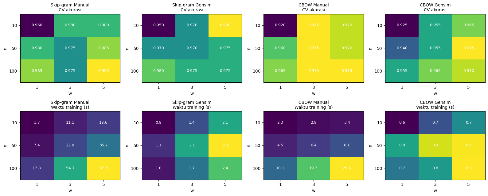

🌸 Analisis BeritaWord Embedding Skip-gram vs CBOW pada Klasifikasi Berita (Sport vs Finance)#
Notebook ini membandingkan Skip-gram dan CBOW dalam dua implementasi:
Manual (NumPy, negative sampling), dan
Gensim (
Word2Vec).
Vektor kata dirata-rata per berita, lalu dievaluasi dengan Naive Bayes (akurasi dan F1). Tiga hal yang diuji:
Skenario preprocessing: angka (dibuang / dipertahankan) × stopword (dibuang / dipertahankan). Tanda baca selalu dibuang dan semua teks di-lowercase.
Eksperimen dimensi vektor (
n) dan ukuran window (w): pengaruhnya ke waktu training dan ke kualitas klasifikasi.Dua tingkat perbandingan: Manual vs Gensim (validasi implementasi + waktu), dan Skip-gram vs CBOW (tiap skenario dan tiap konfigurasi
n,w).
Catatan waktu jalan: implementasi manual berjalan di CPU dengan NumPy, jadi seluruh notebook membutuhkan sekitar 15-30 menit tergantung mesin. Sebagian besar waktu ada di bagian eksperimen
ndanw. Kalau ingin lebih cepat, kecilkanEPOCHSatauN_GRID/W_GRIDdi sel konfigurasi.
Konfigurasi dan Import#
Semua hyperparameter yang dipakai bersama diletakkan di satu tempat supaya perbandingan adil:
EPOCHSsama untuk semua model. CBOW hanya melakukan satu update per posisi kata (Skip-gram melakukan satu per pasangan konteks), sehingga CBOW butuh epoch yang cukup agar tidak underfit pada data sekecil ini.MIN_COUNTmembatasi vocabulary. Dengan hanya 200 berita, kata yang muncul 1-4 kali hampir tidak punya informasi statistik untuk dipelajari embedding, dan membuang kata-kata itu memperkecil matriks sehingga model manual tetap realistis dijalankan.Negative sampling (
NEG=5, distribusi unigram^0.75) dipakai di kedua implementasi, sama seperti default Gensim (hs=0).sample=0danworkers=1di Gensim dipakai agar setara dengan versi manual (tanpa subsampling, satu thread).
%pip install gensim
Defaulting to user installation because normal site-packages is not writeableNote: you may need to restart the kernel to use updated packages.
Requirement already satisfied: gensim in C:\Users\acer\AppData\Roaming\Python\Python312\site-packages (4.4.0)
Requirement already satisfied: numpy>=1.18.5 in C:\Users\acer\AppData\Roaming\Python\Python312\site-packages (from gensim) (2.3.0)
Requirement already satisfied: scipy>=1.7.0 in C:\Users\acer\AppData\Roaming\Python\Python312\site-packages (from gensim) (1.15.3)
Requirement already satisfied: smart_open>=1.8.1 in C:\Users\acer\AppData\Roaming\Python\Python312\site-packages (from gensim) (8.0.2)
Requirement already satisfied: wrapt in C:\Users\acer\AppData\Roaming\Python\Python312\site-packages (from smart_open>=1.8.1->gensim) (2.5.0)
import re, time, warnings
import numpy as np
import pandas as pd
import matplotlib.pyplot as plt
from collections import Counter
from sklearn.model_selection import train_test_split, StratifiedKFold, cross_validate
from sklearn.naive_bayes import GaussianNB
from sklearn.metrics import accuracy_score, f1_score
from gensim.models import Word2Vec # pip install gensim
warnings.filterwarnings("ignore")
pd.set_option("display.width", 200)
SEED = 42
EPOCHS = 20
MIN_COUNT = 5
NEG = 5
BATCH = 256
N_BASE, W_BASE = 50, 2 # konfigurasi dasar untuk perbandingan skenario
N_GRID = [10, 50, 100] # dimensi vektor (n) untuk eksperimen
W_GRID = [1, 3, 5] # ukuran window (w) untuk eksperimen
CSV_PATH = "dataset_berita.csv"
CLEAN_BOILERPLATE = False # True = buang sisa teks web (iklan, tag) sebelum preprocessing; lihat bagian 1
1. Load dan Eksplorasi Data#
Dataset berisi 200 berita berlabel sport dan finance. Kita cek ukuran, keseimbangan kelas, dan panjang berita.
df = pd.read_csv(CSV_PATH)
print("Ukuran data:", df.shape)
display(df.head(3))
print("\nDistribusi label:")
print(df["label"].value_counts())
df["n_kata"] = df["isi_berita"].str.split().str.len()
display(df.groupby("label")["n_kata"].describe().round(1))
fig, ax = plt.subplots(figsize=(6, 3))
for lab, g in df.groupby("label"):
ax.hist(g["n_kata"], bins=20, alpha=0.6, label=lab)
ax.set_xlabel("jumlah kata per berita"); ax.set_ylabel("frekuensi"); ax.legend()
plt.tight_layout(); plt.show()
for pola in ["SCROLL TO CONTINUE WITH CONTENT", "ADVERTISEMENT", "Baca juga", "Tautan telah disalin"]:
print(f"Berita yang memuat '{pola}': {df.isi_berita.str.contains(pola).sum()} dari {len(df)}")
-------------------------------------------------------------
FileNotFoundError Traceback (most recent call last)
Cell In[3], line 1
----> 1 df = pd.read_csv(CSV_PATH)
2 print("Ukuran data:", df.shape)
3 display(df.head(3))
File ~\AppData\Roaming\Python\Python312\site-packages\pandas\io\parsers\readers.py:1026, in read_csv(filepath_or_buffer, sep, delimiter, header, names, index_col, usecols, dtype, engine, converters, true_values, false_values, skipinitialspace, skiprows, skipfooter, nrows, na_values, keep_default_na, na_filter, verbose, skip_blank_lines, parse_dates, infer_datetime_format, keep_date_col, date_parser, date_format, dayfirst, cache_dates, iterator, chunksize, compression, thousands, decimal, lineterminator, quotechar, quoting, doublequote, escapechar, comment, encoding, encoding_errors, dialect, on_bad_lines, delim_whitespace, low_memory, memory_map, float_precision, storage_options, dtype_backend)
1013 kwds_defaults = _refine_defaults_read(
1014 dialect,
1015 delimiter,
(...)
1022 dtype_backend=dtype_backend,
1023 )
1024 kwds.update(kwds_defaults)
-> 1026 return _read(filepath_or_buffer, kwds)
File ~\AppData\Roaming\Python\Python312\site-packages\pandas\io\parsers\readers.py:620, in _read(filepath_or_buffer, kwds)
617 _validate_names(kwds.get("names", None))
619 # Create the parser.
--> 620 parser = TextFileReader(filepath_or_buffer, **kwds)
622 if chunksize or iterator:
623 return parser
File ~\AppData\Roaming\Python\Python312\site-packages\pandas\io\parsers\readers.py:1620, in TextFileReader.__init__(self, f, engine, **kwds)
1617 self.options["has_index_names"] = kwds["has_index_names"]
1619 self.handles: IOHandles | None = None
-> 1620 self._engine = self._make_engine(f, self.engine)
File ~\AppData\Roaming\Python\Python312\site-packages\pandas\io\parsers\readers.py:1880, in TextFileReader._make_engine(self, f, engine)
1878 if "b" not in mode:
1879 mode += "b"
-> 1880 self.handles = get_handle(
1881 f,
1882 mode,
1883 encoding=self.options.get("encoding", None),
1884 compression=self.options.get("compression", None),
1885 memory_map=self.options.get("memory_map", False),
1886 is_text=is_text,
1887 errors=self.options.get("encoding_errors", "strict"),
1888 storage_options=self.options.get("storage_options", None),
1889 )
1890 assert self.handles is not None
1891 f = self.handles.handle
File ~\AppData\Roaming\Python\Python312\site-packages\pandas\io\common.py:873, in get_handle(path_or_buf, mode, encoding, compression, memory_map, is_text, errors, storage_options)
868 elif isinstance(handle, str):
869 # Check whether the filename is to be opened in binary mode.
870 # Binary mode does not support 'encoding' and 'newline'.
871 if ioargs.encoding and "b" not in ioargs.mode:
872 # Encoding
--> 873 handle = open(
874 handle,
875 ioargs.mode,
876 encoding=ioargs.encoding,
877 errors=errors,
878 newline="",
879 )
880 else:
881 # Binary mode
882 handle = open(handle, ioargs.mode)
FileNotFoundError: [Errno 2] No such file or directory: 'dataset_berita.csv'
Temuan penting pada teks. Banyak berita masih membawa sisa halaman web: SCROLL TO CONTINUE WITH CONTENT, ADVERTISEMENT, tautan Baca juga, dan, di akhir sebagian besar berita, deretan tag/kata kunci editor setelah ... Tautan telah disalin. Tag itu (mis. motogp, bank rakyat indonesia) sangat spesifik topik, sehingga bisa membuat klasifikasi jauh lebih mudah dari yang seharusnya. Sesuai rencana awal, pembersihan ini tidak dilakukan secara default. Untuk mengujinya, set CLEAN_BOILERPLATE = True di sel konfigurasi (membuang penanda iklan dan semua teks setelah ... Tautan telah disalin) dan jalankan ulang; bandingkan hasilnya.
Kelas seimbang (100 vs 100), sehingga akurasi cukup bermakna dan F1 macro akan bergerak searah dengan akurasi. Yang perlu diperhatikan: data hanya 200 berita, sehingga satu berita salah klasifikasi di test set (40 berita) sudah mengubah akurasi 2,5 poin. Karena itu selain split 80/20, kita juga memakai stratified 5-fold cross-validation di setiap evaluasi.
2. Fungsi Preprocessing#
Langkah-langkahnya:
Hapus dateline: awalan seperti
Jakarta -di awal berita adalah pola redaksional, bukan isi. Regex yang dipakai juga menangkap kota lain (mis.Nusa Dua -) supaya tidak ada kata “jakarta” yang muncul di semua berita dan tidak informatif.Lowercase supaya
Indonesiadanindonesiadianggap satu kata.Buang tanda baca: semua karakter selain huruf/angka diganti spasi (
Aichi-Nagoyamenjadiaichi nagoya).Buang angka (opsional): token yang seluruhnya digit (
2026,19). Token campuran sepertiu23tetap dipertahankan.Buang stopword (opsional): kata fungsi bahasa Indonesia yang sangat sering (
yang,dan,di, …). Daftarnya ditulis langsung di notebook agar tidak butuh unduhan NLTK/Sastrawi.
STOPWORDS = set("""yang dan di ke dari dalam untuk pada dengan ini itu atau juga karena sebagai adalah akan telah sudah masih belum
tidak bukan ada oleh saat sebuah para serta tetapi namun sehingga agar jika bila apabila ketika setelah sebelum sambil hingga sampai
antara terhadap tentang mengenai secara bagi lebih paling sangat hanya saja pun lah kah nya kami kita kamu anda saya aku dia mereka
beliau ia sini situ sana yaitu yakni yaitu dapat bisa harus perlu mau ingin akan sedang lagi kembali sekitar setiap semua seluruh
banyak beberapa berbagai lain lainnya tersebut begitu seperti sama dua tiga satu lalu kemudian sempat pernah tengah antara demi
bahwa mungkin dong deh sih tapi kalau ya oleh usai sejak selama bahkan tanpa kepada dalam atas bawah maka mana apa siapa
kapan bagaimana berapa mengapa mereka olehnya dirinya sendiri terus amat cukup kurang hampir kira""".split())
DATELINE = re.compile(r"^\s*[A-Z][A-Za-z\.\s]{1,30}?\s-\s")
def strip_dateline(t):
return DATELINE.sub("", t, count=1)
def clean_boilerplate(t):
t = t.split("... Tautan telah disalin")[0] # tag/kata kunci editor di akhir berita
return re.sub(r"SCROLL TO CONTINUE WITH CONTENT|ADVERTISEMENT", " ", t)
def preprocess(text, remove_numbers, remove_stopwords):
if CLEAN_BOILERPLATE:
text = clean_boilerplate(text)
t = strip_dateline(text).lower()
t = re.sub(r"[^a-z0-9\s]", " ", t) # tanda baca selalu dibuang
toks = t.split()
if remove_numbers:
toks = [w for w in toks if not w.isdigit()]
if remove_stopwords:
toks = [w for w in toks if w not in STOPWORDS]
return toks
print("Berita pertama, sebelum dan sesudah strip dateline:")
print(" -", df.isi_berita[0][:90])
print(" -", strip_dateline(df.isi_berita[0])[:90])
print("Berita dengan dateline selain Jakarta dihapus juga:",
df.isi_berita.str.extract(r"^([^-]{0,30}) - ")[0].nunique(), "dateline berbeda ditemukan")
Berita pertama, sebelum dan sesudah strip dateline:
- Jakarta - Putri Kusuma Wardani percaya diri dengan komposisi beregu putri yang dipilih PBS
- Putri Kusuma Wardani percaya diri dengan komposisi beregu putri yang dipilih PBSI untuk As
Berita dengan dateline selain Jakarta dihapus juga: 14 dateline berbeda ditemukan
3. Fungsi Bersama: Vocabulary, One-hot, Skip-gram/CBOW Manual, Gensim, Evaluasi#
Bagian ini hanya mendefinisikan fungsi; tiap skenario di bawah memanggilnya.
Tentang one-hot. Input model adalah one-hot kata (vektor panjang V berisi satu angka 1). Perkalian one_hot @ W_in sama persis dengan mengambil satu baris W_in[indeks]. Agar training tidak membuat matriks N × V yang sangat besar, implementasi manual memakai bentuk lookup ini. Kesetaraannya dibuktikan (np.allclose) di sel one-hot tiap skenario.
Model manual.
Skip-gram: input kata tengah, target kata-kata konteks di sekitarnya.
CBOW: input rata-rata vektor kata konteks, target kata tengah.
Keduanya memakai negative sampling dengan update mini-batch dan learning rate turun linear (0,025 ke 0,0001), sama seperti Gensim. Perbedaan yang tersisa: Gensim mengacak ukuran window per posisi (reduced window), sedangkan versi manual memakai window tetap; dan versi manual memakai mini-batch. Jadi hasil keduanya mirip, bukan identik.
Waktu training manual mencakup pembuatan pasangan konteks dan seluruh epoch; waktu Gensim mencakup konstruktor
Word2Vec(termasuk build vocab).
Vektor berita = rata-rata vektor input semua kata berita yang ada di vocabulary. Evaluasi: split 80/20 stratified (seed tetap, sama untuk semua model) ditambah 5-fold stratified CV. Embedding dilatih tanpa label pada seluruh 200 berita (tidak memakai informasi kelas), jadi tidak ada kebocoran label.
def build_vocab(docs, min_count):
c = Counter(w for d in docs for w in d)
words = [w for w, f in c.most_common() if f >= min_count]
return words, {w: i for i, w in enumerate(words)}, np.array([c[w] for w in words], float)
def one_hot(idx, V):
m = np.zeros((len(idx), V)); m[np.arange(len(idx)), idx] = 1
return m
def encode_docs(docs, w2i):
return [np.array([w2i[w] for w in d if w in w2i], dtype=np.int64) for d in docs]
def make_pairs(enc, w):
toks = np.concatenate(enc); did = np.concatenate([np.full(len(e), i) for i,e in enumerate(enc)])
N = len(toks); ctx = np.full((N, 2*w), -1, dtype=np.int64); col = 0
for k in list(range(-w, 0)) + list(range(1, w+1)):
i = np.arange(max(0,-k), min(N, N-k)); j = i + k
ok = did[i] == did[j]
ctx[i[ok], col] = toks[j[ok]]; col += 1
return toks, ctx
def sigmoid(x): return 1/(1+np.exp(-np.clip(x,-30,30)))
def scatter_add(W, idx, vals):
"""W[idx[i]] += vals[i], dengan indeks duplikat dijumlahkan (lebih cepat dari np.add.at)."""
idx = idx.ravel(); vals = vals.reshape(len(idx), -1)
o = np.argsort(idx, kind='stable'); si = idx[o]
starts = np.flatnonzero(np.r_[True, si[1:] != si[:-1]])
W[si[starts]] += np.add.reduceat(vals[o], starts, axis=0)
def train_manual(kind, enc, freq, V, n, w, epochs=None, neg=None, lr0=0.025, lr_min=0.0001, batch=None, seed=None):
epochs = epochs or EPOCHS; neg = neg or NEG; batch = batch or BATCH; seed = SEED if seed is None else seed
t0 = time.perf_counter(); rng = np.random.default_rng(seed)
toks, ctx = make_pairs(enc, w)
if kind == 'sg':
m = ctx >= 0; rows = np.repeat(np.arange(len(toks)), m.sum(1)); centers = toks[rows]; contexts = ctx[m] # input=center, target=context
W_in = (rng.random((V, n)) - 0.5) / n; W_out = np.zeros((V, n))
p = freq**0.75; p /= p.sum()
N = len(centers) if kind=='sg' else len(toks); total = epochs * ((N+batch-1)//batch); step = 0
for ep in range(epochs):
order = rng.permutation(N)
for s in range(0, N, batch):
b = order[s:s+batch]; lr = max(lr_min, lr0*(1-step/total)); step += 1
negs = rng.choice(V, size=(len(b), neg), p=p)
if kind == 'sg':
inp = centers[b]; tgt = contexts[b]
h = W_in[inp]
else:
c = ctx[b]; msk = (c >= 0); cnt = np.maximum(msk.sum(1), 1)
h = (W_in[np.where(msk, c, 0)] * msk[:,:,None]).sum(1) / cnt[:,None]
tgt = toks[b]
up = W_out[tgt]; un = W_out[negs]
gp = sigmoid((h*up).sum(1)) - 1; gn = sigmoid(np.einsum('bd,bkd->bk', h, un))
gh = gp[:,None]*up + np.einsum('bk,bkd->bd', gn, un)
scatter_add(W_out, np.concatenate([tgt, negs.ravel()]), np.concatenate([-lr*gp[:,None]*h, (-lr*gn[:,:,None]*h[:,None,:]).reshape(-1, h.shape[1])]))
if kind == 'sg': scatter_add(W_in, inp, -lr*gh)
else:
gc = (-lr*gh)[:,None,:]*msk[:,:,None]
scatter_add(W_in, c[msk], gc[msk])
return W_in, time.perf_counter() - t0
def train_gensim(kind, docs, n, w, seed=None):
t0 = time.perf_counter()
m = Word2Vec(sentences=docs, vector_size=n, window=w, min_count=MIN_COUNT,
sg=1 if kind == "sg" else 0, hs=0, negative=NEG, sample=0,
alpha=0.025, min_alpha=0.0001, epochs=EPOCHS, workers=1,
seed=SEED if seed is None else seed)
return list(m.wv.index_to_key), np.array(m.wv.vectors), time.perf_counter() - t0
def fit(kind, impl, docs, n, w):
"""Latih satu model. Return dict(words, matrix, time)."""
if impl == "Manual":
words, w2i, freq = build_vocab(docs, MIN_COUNT)
W, t = train_manual(kind, encode_docs(docs, w2i), freq, len(words), n, w)
else:
words, W, t = train_gensim(kind, docs, n, w)
return dict(words=words, matrix=W, time=t)
def doc_vectors(docs, model):
w2i = {w: i for i, w in enumerate(model["words"])}
out = np.zeros((len(docs), model["matrix"].shape[1]))
for k, d in enumerate(docs):
idx = [w2i[w] for w in d if w in w2i]
if idx: out[k] = model["matrix"][idx].mean(axis=0)
return out
Label, one-hot label, dan split data#
Label dikodekan finance = 0, sport = 1, lalu dibuat one-hot ([1,0] / [0,1]) sebagai representasi keluaran. GaussianNB di scikit-learn membutuhkan label bulat (0/1), bukan matriks one-hot, sehingga one-hot label diubah balik dengan argmax sebelum masuk ke classifier. Karena vektor kata bisa bernilai negatif, kita memakai GaussianNB (MultinomialNB menolak fitur negatif).
CLASSES = ["finance", "sport"]
y_raw = df["label"].map({c: i for i, c in enumerate(CLASSES)}).values
Y_onehot = one_hot(y_raw, len(CLASSES))
y = Y_onehot.argmax(axis=1) # label bulat untuk classifier
assert (y == y_raw).all()
print("Contoh one-hot label (5 pertama):\n", Y_onehot[:5].astype(int).tolist(), "-> argmax:", y[:5].tolist())
idx_train, idx_test = train_test_split(np.arange(len(df)), test_size=0.2, stratify=y, random_state=SEED)
print("Train:", len(idx_train), "| Test:", len(idx_test), "| proporsi sport di test:", y[idx_test].mean())
def evaluate(X):
clf = GaussianNB().fit(X[idx_train], y[idx_train])
pred = clf.predict(X[idx_test])
cv = cross_validate(GaussianNB(), X, y, scoring=["accuracy", "f1_macro"],
cv=StratifiedKFold(5, shuffle=True, random_state=SEED))
return dict(acc=accuracy_score(y[idx_test], pred), f1=f1_score(y[idx_test], pred, average="macro"),
cv_acc=cv["test_accuracy"].mean(), cv_acc_std=cv["test_accuracy"].std(),
cv_f1=cv["test_f1_macro"].mean())
RESULTS, MODELS, SC = [], {}, {}
MODEL_ORDER = [("sg", "Manual"), ("sg", "Gensim"), ("cbow", "Manual"), ("cbow", "Gensim")]
KIND_NAME = {"sg": "Skip-gram", "cbow": "CBOW"}
Contoh one-hot label (5 pertama):
[[0, 1], [0, 1], [0, 1], [0, 1], [0, 1]] -> argmax: [1, 1, 1, 1, 1]
Train: 160 | Test: 40 | proporsi sport di test: 0.5
Skenario 1: Angka dibuang, stopword dibuang#
Angka dibuang, stopword dibuang. Tanda baca selalu dibuang dan teks di-lowercase.
1.1 Preprocessing#
SCN = "S1_angka_dibuang_stopword_dibuang"
docs = [preprocess(t, remove_numbers=True, remove_stopwords=True) for t in df.isi_berita]
SC[SCN] = dict(docs=docs)
words, w2i, freq = build_vocab(docs, MIN_COUNT)
print("Sebelum:", strip_dateline(df.isi_berita[0])[:200])
print("Sesudah:", " ".join(docs[0][:30]))
print(f"\nTotal token: {sum(map(len, docs)):,} | vocab penuh: {len(set(w for d in docs for w in d)):,} "
f"| vocab (min_count={MIN_COUNT}): {len(words):,}")
print("10 kata teratas:", [(w, int(f)) for w, f in zip(words[:10], freq[:10])])
Sebelum: Putri Kusuma Wardani percaya diri dengan komposisi beregu putri yang dipilih PBSI untuk Asian Games 2026. Dia juga menyebut chemistry satu sama lain sudah klop. Bulutangkis Indonesia mengirimkan 20 wa
Sesudah: putri kusuma wardani percaya diri komposisi beregu putri dipilih pbsi asian games menyebut chemistry klop bulutangkis indonesia mengirimkan wakil tampil aichi nagoya september oktober mendatang atlet antaranya merupakan sektor beregu
Total token: 49,610 | vocab penuh: 7,491 | vocab (min_count=5): 2,203
10 kata teratas: [('indonesia', 387), ('menjadi', 284), ('baca', 266), ('video', 241), ('rp', 212), ('to', 204), ('scroll', 193), ('continue', 193), ('with', 193), ('content', 193)]
1.2 One-hot encoding#
Vocabulary dibatasi MIN_COUNT. Di bawah ini one-hot untuk beberapa kata pertama sebuah berita (input model), lalu bukti bahwa one_hot @ W sama dengan lookup baris, dan one-hot label.
V = len(words)
sample_words = [w for w in docs[0] if w in w2i][:6]
sample_idx = np.array([w2i[w] for w in sample_words])
OH = one_hot(sample_idx, V)
print("Kata:", sample_words)
print("Bentuk one-hot:", OH.shape, "| indeks yang bernilai 1:", OH.argmax(1).tolist())
W_test = np.random.default_rng(0).normal(size=(V, 4))
print("one_hot @ W == W[indeks] ->", np.allclose(OH @ W_test, W_test[sample_idx]))
print("One-hot label 3 berita pertama:", Y_onehot[:3].astype(int).tolist(), "->", CLASSES[y[0]], CLASSES[y[1]], CLASSES[y[2]])
Kata: ['putri', 'percaya', 'diri', 'beregu', 'putri', 'pbsi']
Bentuk one-hot: (6, 2203) | indeks yang bernilai 1: [380, 549, 209, 1169, 380, 1421]
one_hot @ W == W[indeks] -> True
One-hot label 3 berita pertama: [[0, 1], [0, 1], [0, 1]] -> sport sport sport
1.3 Skip-gram (Manual dan Gensim)#
Konfigurasi dasar: n = 50 dimensi, w = 2 window.
for impl in ["Manual", "Gensim"]:
MODELS[(SCN, "sg", impl, N_BASE, W_BASE)] = m = fit("sg", impl, SC[SCN]["docs"], N_BASE, W_BASE)
print(f"Skip-gram {impl:6s}: vocab={len(m['words'])}, waktu training={m['time']:.2f} s")
Skip-gram Manual: vocab=2203, waktu training=14.43 s
Skip-gram Gensim: vocab=2203, waktu training=1.63 s
1.4 CBOW (Manual dan Gensim)#
for impl in ["Manual", "Gensim"]:
MODELS[(SCN, "cbow", impl, N_BASE, W_BASE)] = m = fit("cbow", impl, SC[SCN]["docs"], N_BASE, W_BASE)
print(f"CBOW {impl:6s}: vocab={len(m['words'])}, waktu training={m['time']:.2f} s")
CBOW Manual: vocab=2203, waktu training=5.98 s
CBOW Gensim: vocab=2203, waktu training=0.85 s
1.5 Naive Bayes dan evaluasi#
Setiap model diubah menjadi vektor berita (rata-rata vektor kata), lalu dievaluasi dengan GaussianNB. acc/f1 dari test 80/20; cv_acc/cv_f1 dari 5-fold CV (lebih stabil untuk 200 data).
rows = []
for kind, impl in MODEL_ORDER:
m = MODELS[(SCN, kind, impl, N_BASE, W_BASE)]
r = evaluate(doc_vectors(SC[SCN]["docs"], m))
rec = dict(fase="skenario", skenario=SCN, model=KIND_NAME[kind], impl=impl, n=N_BASE, w=W_BASE, waktu=m["time"], **r)
RESULTS.append(rec); rows.append(rec)
display(pd.DataFrame(rows)[["model", "impl", "acc", "f1", "cv_acc", "cv_acc_std", "cv_f1", "waktu"]].round(4))
| model | impl | acc | f1 | cv_acc | cv_acc_std | cv_f1 | waktu | |
|---|---|---|---|---|---|---|---|---|
| 0 | Skip-gram | Manual | 1.000 | 1.000 | 0.975 | 0.0158 | 0.9750 | 14.4314 |
| 1 | Skip-gram | Gensim | 1.000 | 1.000 | 0.975 | 0.0158 | 0.9750 | 1.6320 |
| 2 | CBOW | Manual | 0.975 | 0.975 | 0.975 | 0.0158 | 0.9750 | 5.9796 |
| 3 | CBOW | Gensim | 0.925 | 0.925 | 0.940 | 0.0339 | 0.9399 | 0.8463 |
Skenario 2: Angka dibuang, stopword dipertahankan#
Angka dibuang, stopword dipertahankan. Tanda baca selalu dibuang dan teks di-lowercase.
2.1 Preprocessing#
SCN = "S2_angka_dibuang_stopword_ada"
docs = [preprocess(t, remove_numbers=True, remove_stopwords=False) for t in df.isi_berita]
SC[SCN] = dict(docs=docs)
words, w2i, freq = build_vocab(docs, MIN_COUNT)
print("Sebelum:", strip_dateline(df.isi_berita[0])[:200])
print("Sesudah:", " ".join(docs[0][:30]))
print(f"\nTotal token: {sum(map(len, docs)):,} | vocab penuh: {len(set(w for d in docs for w in d)):,} "
f"| vocab (min_count={MIN_COUNT}): {len(words):,}")
print("10 kata teratas:", [(w, int(f)) for w, f in zip(words[:10], freq[:10])])
Sebelum: Putri Kusuma Wardani percaya diri dengan komposisi beregu putri yang dipilih PBSI untuk Asian Games 2026. Dia juga menyebut chemistry satu sama lain sudah klop. Bulutangkis Indonesia mengirimkan 20 wa
Sesudah: putri kusuma wardani percaya diri dengan komposisi beregu putri yang dipilih pbsi untuk asian games dia juga menyebut chemistry satu sama lain sudah klop bulutangkis indonesia mengirimkan wakil untuk tampil
Total token: 67,367 | vocab penuh: 7,624 | vocab (min_count=5): 2,329
10 kata teratas: [('di', 1334), ('yang', 1270), ('dan', 1153), ('juga', 704), ('ini', 703), ('untuk', 645), ('dari', 584), ('dengan', 574), ('dalam', 468), ('itu', 422)]
2.2 One-hot encoding#
Vocabulary dibatasi MIN_COUNT. Di bawah ini one-hot untuk beberapa kata pertama sebuah berita (input model), lalu bukti bahwa one_hot @ W sama dengan lookup baris, dan one-hot label.
V = len(words)
sample_words = [w for w in docs[0] if w in w2i][:6]
sample_idx = np.array([w2i[w] for w in sample_words])
OH = one_hot(sample_idx, V)
print("Kata:", sample_words)
print("Bentuk one-hot:", OH.shape, "| indeks yang bernilai 1:", OH.argmax(1).tolist())
W_test = np.random.default_rng(0).normal(size=(V, 4))
print("one_hot @ W == W[indeks] ->", np.allclose(OH @ W_test, W_test[sample_idx]))
print("One-hot label 3 berita pertama:", Y_onehot[:3].astype(int).tolist(), "->", CLASSES[y[0]], CLASSES[y[1]], CLASSES[y[2]])
Kata: ['putri', 'percaya', 'diri', 'dengan', 'beregu', 'putri']
Bentuk one-hot: (6, 2329) | indeks yang bernilai 1: [483, 661, 296, 7, 1291, 483]
one_hot @ W == W[indeks] -> True
One-hot label 3 berita pertama: [[0, 1], [0, 1], [0, 1]] -> sport sport sport
2.3 Skip-gram (Manual dan Gensim)#
Konfigurasi dasar: n = 50 dimensi, w = 2 window.
for impl in ["Manual", "Gensim"]:
MODELS[(SCN, "sg", impl, N_BASE, W_BASE)] = m = fit("sg", impl, SC[SCN]["docs"], N_BASE, W_BASE)
print(f"Skip-gram {impl:6s}: vocab={len(m['words'])}, waktu training={m['time']:.2f} s")
Skip-gram Manual: vocab=2329, waktu training=21.38 s
Skip-gram Gensim: vocab=2329, waktu training=2.04 s
2.4 CBOW (Manual dan Gensim)#
for impl in ["Manual", "Gensim"]:
MODELS[(SCN, "cbow", impl, N_BASE, W_BASE)] = m = fit("cbow", impl, SC[SCN]["docs"], N_BASE, W_BASE)
print(f"CBOW {impl:6s}: vocab={len(m['words'])}, waktu training={m['time']:.2f} s")
CBOW Manual: vocab=2329, waktu training=8.44 s
CBOW Gensim: vocab=2329, waktu training=1.21 s
2.5 Naive Bayes dan evaluasi#
Setiap model diubah menjadi vektor berita (rata-rata vektor kata), lalu dievaluasi dengan GaussianNB. acc/f1 dari test 80/20; cv_acc/cv_f1 dari 5-fold CV (lebih stabil untuk 200 data).
rows = []
for kind, impl in MODEL_ORDER:
m = MODELS[(SCN, kind, impl, N_BASE, W_BASE)]
r = evaluate(doc_vectors(SC[SCN]["docs"], m))
rec = dict(fase="skenario", skenario=SCN, model=KIND_NAME[kind], impl=impl, n=N_BASE, w=W_BASE, waktu=m["time"], **r)
RESULTS.append(rec); rows.append(rec)
display(pd.DataFrame(rows)[["model", "impl", "acc", "f1", "cv_acc", "cv_acc_std", "cv_f1", "waktu"]].round(4))
| model | impl | acc | f1 | cv_acc | cv_acc_std | cv_f1 | waktu | |
|---|---|---|---|---|---|---|---|---|
| 0 | Skip-gram | Manual | 1.000 | 1.0000 | 0.975 | 0.0158 | 0.9750 | 21.3825 |
| 1 | Skip-gram | Gensim | 0.975 | 0.9750 | 0.955 | 0.0332 | 0.9549 | 2.0432 |
| 2 | CBOW | Manual | 0.975 | 0.9750 | 0.950 | 0.0354 | 0.9498 | 8.4415 |
| 3 | CBOW | Gensim | 0.900 | 0.8997 | 0.930 | 0.0430 | 0.9298 | 1.2060 |
Skenario 3: Angka dipertahankan, stopword dibuang#
Angka dipertahankan, stopword dibuang. Tanda baca selalu dibuang dan teks di-lowercase.
3.1 Preprocessing#
SCN = "S3_angka_ada_stopword_dibuang"
docs = [preprocess(t, remove_numbers=False, remove_stopwords=True) for t in df.isi_berita]
SC[SCN] = dict(docs=docs)
words, w2i, freq = build_vocab(docs, MIN_COUNT)
print("Sebelum:", strip_dateline(df.isi_berita[0])[:200])
print("Sesudah:", " ".join(docs[0][:30]))
print(f"\nTotal token: {sum(map(len, docs)):,} | vocab penuh: {len(set(w for d in docs for w in d)):,} "
f"| vocab (min_count={MIN_COUNT}): {len(words):,}")
print("10 kata teratas:", [(w, int(f)) for w, f in zip(words[:10], freq[:10])])
Sebelum: Putri Kusuma Wardani percaya diri dengan komposisi beregu putri yang dipilih PBSI untuk Asian Games 2026. Dia juga menyebut chemistry satu sama lain sudah klop. Bulutangkis Indonesia mengirimkan 20 wa
Sesudah: putri kusuma wardani percaya diri komposisi beregu putri dipilih pbsi asian games 2026 menyebut chemistry klop bulutangkis indonesia mengirimkan 20 wakil tampil aichi nagoya 19 september 4 oktober mendatang 10
Total token: 53,075 | vocab penuh: 7,832 | vocab (min_count=5): 2,285
10 kata teratas: [('2026', 522), ('indonesia', 387), ('9', 299), ('menjadi', 284), ('baca', 266), ('video', 241), ('rp', 212), ('to', 204), ('scroll', 193), ('continue', 193)]
3.2 One-hot encoding#
Vocabulary dibatasi MIN_COUNT. Di bawah ini one-hot untuk beberapa kata pertama sebuah berita (input model), lalu bukti bahwa one_hot @ W sama dengan lookup baris, dan one-hot label.
V = len(words)
sample_words = [w for w in docs[0] if w in w2i][:6]
sample_idx = np.array([w2i[w] for w in sample_words])
OH = one_hot(sample_idx, V)
print("Kata:", sample_words)
print("Bentuk one-hot:", OH.shape, "| indeks yang bernilai 1:", OH.argmax(1).tolist())
W_test = np.random.default_rng(0).normal(size=(V, 4))
print("one_hot @ W == W[indeks] ->", np.allclose(OH @ W_test, W_test[sample_idx]))
print("One-hot label 3 berita pertama:", Y_onehot[:3].astype(int).tolist(), "->", CLASSES[y[0]], CLASSES[y[1]], CLASSES[y[2]])
Kata: ['putri', 'percaya', 'diri', 'beregu', 'putri', 'pbsi']
Bentuk one-hot: (6, 2285) | indeks yang bernilai 1: [408, 583, 230, 1221, 408, 1475]
one_hot @ W == W[indeks] -> True
One-hot label 3 berita pertama: [[0, 1], [0, 1], [0, 1]] -> sport sport sport
3.3 Skip-gram (Manual dan Gensim)#
Konfigurasi dasar: n = 50 dimensi, w = 2 window.
for impl in ["Manual", "Gensim"]:
MODELS[(SCN, "sg", impl, N_BASE, W_BASE)] = m = fit("sg", impl, SC[SCN]["docs"], N_BASE, W_BASE)
print(f"Skip-gram {impl:6s}: vocab={len(m['words'])}, waktu training={m['time']:.2f} s")
Skip-gram Manual: vocab=2285, waktu training=16.00 s
Skip-gram Gensim: vocab=2285, waktu training=1.84 s
3.4 CBOW (Manual dan Gensim)#
for impl in ["Manual", "Gensim"]:
MODELS[(SCN, "cbow", impl, N_BASE, W_BASE)] = m = fit("cbow", impl, SC[SCN]["docs"], N_BASE, W_BASE)
print(f"CBOW {impl:6s}: vocab={len(m['words'])}, waktu training={m['time']:.2f} s")
CBOW Manual: vocab=2285, waktu training=7.30 s
CBOW Gensim: vocab=2285, waktu training=0.91 s
3.5 Naive Bayes dan evaluasi#
Setiap model diubah menjadi vektor berita (rata-rata vektor kata), lalu dievaluasi dengan GaussianNB. acc/f1 dari test 80/20; cv_acc/cv_f1 dari 5-fold CV (lebih stabil untuk 200 data).
rows = []
for kind, impl in MODEL_ORDER:
m = MODELS[(SCN, kind, impl, N_BASE, W_BASE)]
r = evaluate(doc_vectors(SC[SCN]["docs"], m))
rec = dict(fase="skenario", skenario=SCN, model=KIND_NAME[kind], impl=impl, n=N_BASE, w=W_BASE, waktu=m["time"], **r)
RESULTS.append(rec); rows.append(rec)
display(pd.DataFrame(rows)[["model", "impl", "acc", "f1", "cv_acc", "cv_acc_std", "cv_f1", "waktu"]].round(4))
| model | impl | acc | f1 | cv_acc | cv_acc_std | cv_f1 | waktu | |
|---|---|---|---|---|---|---|---|---|
| 0 | Skip-gram | Manual | 1.000 | 1.0000 | 0.970 | 0.0245 | 0.9700 | 15.9996 |
| 1 | Skip-gram | Gensim | 0.925 | 0.9246 | 0.960 | 0.0255 | 0.9599 | 1.8413 |
| 2 | CBOW | Manual | 0.975 | 0.9750 | 0.975 | 0.0274 | 0.9750 | 7.3007 |
| 3 | CBOW | Gensim | 0.875 | 0.8743 | 0.935 | 0.0406 | 0.9349 | 0.9089 |
Skenario 4: Angka dipertahankan, stopword dipertahankan#
Angka dipertahankan, stopword dipertahankan. Tanda baca selalu dibuang dan teks di-lowercase.
4.1 Preprocessing#
SCN = "S4_angka_ada_stopword_ada"
docs = [preprocess(t, remove_numbers=False, remove_stopwords=False) for t in df.isi_berita]
SC[SCN] = dict(docs=docs)
words, w2i, freq = build_vocab(docs, MIN_COUNT)
print("Sebelum:", strip_dateline(df.isi_berita[0])[:200])
print("Sesudah:", " ".join(docs[0][:30]))
print(f"\nTotal token: {sum(map(len, docs)):,} | vocab penuh: {len(set(w for d in docs for w in d)):,} "
f"| vocab (min_count={MIN_COUNT}): {len(words):,}")
print("10 kata teratas:", [(w, int(f)) for w, f in zip(words[:10], freq[:10])])
Sebelum: Putri Kusuma Wardani percaya diri dengan komposisi beregu putri yang dipilih PBSI untuk Asian Games 2026. Dia juga menyebut chemistry satu sama lain sudah klop. Bulutangkis Indonesia mengirimkan 20 wa
Sesudah: putri kusuma wardani percaya diri dengan komposisi beregu putri yang dipilih pbsi untuk asian games 2026 dia juga menyebut chemistry satu sama lain sudah klop bulutangkis indonesia mengirimkan 20 wakil
Total token: 70,832 | vocab penuh: 7,965 | vocab (min_count=5): 2,411
10 kata teratas: [('di', 1334), ('yang', 1270), ('dan', 1153), ('juga', 704), ('ini', 703), ('untuk', 645), ('dari', 584), ('dengan', 574), ('2026', 522), ('dalam', 468)]
4.2 One-hot encoding#
Vocabulary dibatasi MIN_COUNT. Di bawah ini one-hot untuk beberapa kata pertama sebuah berita (input model), lalu bukti bahwa one_hot @ W sama dengan lookup baris, dan one-hot label.
V = len(words)
sample_words = [w for w in docs[0] if w in w2i][:6]
sample_idx = np.array([w2i[w] for w in sample_words])
OH = one_hot(sample_idx, V)
print("Kata:", sample_words)
print("Bentuk one-hot:", OH.shape, "| indeks yang bernilai 1:", OH.argmax(1).tolist())
W_test = np.random.default_rng(0).normal(size=(V, 4))
print("one_hot @ W == W[indeks] ->", np.allclose(OH @ W_test, W_test[sample_idx]))
print("One-hot label 3 berita pertama:", Y_onehot[:3].astype(int).tolist(), "->", CLASSES[y[0]], CLASSES[y[1]], CLASSES[y[2]])
Kata: ['putri', 'percaya', 'diri', 'dengan', 'beregu', 'putri']
Bentuk one-hot: (6, 2411) | indeks yang bernilai 1: [511, 695, 317, 7, 1343, 511]
one_hot @ W == W[indeks] -> True
One-hot label 3 berita pertama: [[0, 1], [0, 1], [0, 1]] -> sport sport sport
4.3 Skip-gram (Manual dan Gensim)#
Konfigurasi dasar: n = 50 dimensi, w = 2 window.
for impl in ["Manual", "Gensim"]:
MODELS[(SCN, "sg", impl, N_BASE, W_BASE)] = m = fit("sg", impl, SC[SCN]["docs"], N_BASE, W_BASE)
print(f"Skip-gram {impl:6s}: vocab={len(m['words'])}, waktu training={m['time']:.2f} s")
Skip-gram Manual: vocab=2411, waktu training=23.44 s
Skip-gram Gensim: vocab=2411, waktu training=2.44 s
4.4 CBOW (Manual dan Gensim)#
for impl in ["Manual", "Gensim"]:
MODELS[(SCN, "cbow", impl, N_BASE, W_BASE)] = m = fit("cbow", impl, SC[SCN]["docs"], N_BASE, W_BASE)
print(f"CBOW {impl:6s}: vocab={len(m['words'])}, waktu training={m['time']:.2f} s")
CBOW Manual: vocab=2411, waktu training=8.53 s
CBOW Gensim: vocab=2411, waktu training=1.22 s
4.5 Naive Bayes dan evaluasi#
Setiap model diubah menjadi vektor berita (rata-rata vektor kata), lalu dievaluasi dengan GaussianNB. acc/f1 dari test 80/20; cv_acc/cv_f1 dari 5-fold CV (lebih stabil untuk 200 data).
rows = []
for kind, impl in MODEL_ORDER:
m = MODELS[(SCN, kind, impl, N_BASE, W_BASE)]
r = evaluate(doc_vectors(SC[SCN]["docs"], m))
rec = dict(fase="skenario", skenario=SCN, model=KIND_NAME[kind], impl=impl, n=N_BASE, w=W_BASE, waktu=m["time"], **r)
RESULTS.append(rec); rows.append(rec)
display(pd.DataFrame(rows)[["model", "impl", "acc", "f1", "cv_acc", "cv_acc_std", "cv_f1", "waktu"]].round(4))
| model | impl | acc | f1 | cv_acc | cv_acc_std | cv_f1 | waktu | |
|---|---|---|---|---|---|---|---|---|
| 0 | Skip-gram | Manual | 0.950 | 0.9499 | 0.970 | 0.0187 | 0.9699 | 23.4414 |
| 1 | Skip-gram | Gensim | 0.925 | 0.9246 | 0.955 | 0.0292 | 0.9548 | 2.4380 |
| 2 | CBOW | Manual | 0.900 | 0.8997 | 0.925 | 0.0500 | 0.9249 | 8.5291 |
| 3 | CBOW | Gensim | 0.900 | 0.8997 | 0.920 | 0.0579 | 0.9199 | 1.2155 |
4. Ringkasan Empat Skenario#
Tabel gabungan untuk melihat pengaruh angka dan stopword. Karena data kecil, bandingkan cv_acc beserta cv_acc_std: selisih yang lebih kecil dari satu simpangan baku sebaiknya tidak dianggap perbedaan nyata.
df_scn = pd.DataFrame([r for r in RESULTS if r["fase"] == "skenario"])
display(df_scn.pivot_table(index="skenario", columns=["model", "impl"], values="cv_acc").round(4))
display(df_scn.pivot_table(index="skenario", columns=["model", "impl"], values="waktu").round(2))
best = df_scn.groupby("skenario")["cv_acc"].mean().sort_values(ascending=False)
BEST_SCN = best.index[0]
print("Rata-rata cv_acc (empat model) per skenario:"); print(best.round(4))
print("\nSkenario terpilih untuk eksperimen n dan w:", BEST_SCN)
| model | CBOW | Skip-gram | ||
|---|---|---|---|---|
| impl | Gensim | Manual | Gensim | Manual |
| skenario | ||||
| S1_angka_dibuang_stopword_dibuang | 0.940 | 0.975 | 0.975 | 0.975 |
| S2_angka_dibuang_stopword_ada | 0.930 | 0.950 | 0.955 | 0.975 |
| S3_angka_ada_stopword_dibuang | 0.935 | 0.975 | 0.960 | 0.970 |
| S4_angka_ada_stopword_ada | 0.920 | 0.925 | 0.955 | 0.970 |
| model | CBOW | Skip-gram | ||
|---|---|---|---|---|
| impl | Gensim | Manual | Gensim | Manual |
| skenario | ||||
| S1_angka_dibuang_stopword_dibuang | 0.85 | 5.98 | 1.63 | 14.43 |
| S2_angka_dibuang_stopword_ada | 1.21 | 8.44 | 2.04 | 21.38 |
| S3_angka_ada_stopword_dibuang | 0.91 | 7.30 | 1.84 | 16.00 |
| S4_angka_ada_stopword_ada | 1.22 | 8.53 | 2.44 | 23.44 |
Rata-rata cv_acc (empat model) per skenario:
skenario
S1_angka_dibuang_stopword_dibuang 0.9662
S3_angka_ada_stopword_dibuang 0.9600
S2_angka_dibuang_stopword_ada 0.9525
S4_angka_ada_stopword_ada 0.9425
Name: cv_acc, dtype: float64
Skenario terpilih untuk eksperimen n dan w: S1_angka_dibuang_stopword_dibuang
5. Eksperimen Dimensi Vektor (n) dan Window (w)#
Pada skenario dengan rata-rata cv_acc tertinggi (dipilih otomatis di atas), semua kombinasi n × w dilatih untuk Skip-gram dan CBOW, Manual dan Gensim. Untuk tiap kombinasi dicatat waktu training dan akurasi/F1 Naive Bayes, sehingga kita bisa melihat apakah vektor yang lebih besar atau window yang lebih lebar benar-benar memperbaiki klasifikasi, bukan hanya memperlambat training.
Catatan: konfigurasi dasar (n=50, w=2) tidak ada di grid W_GRID default, jadi hasilnya berasal dari sel ini, bukan dari bagian skenario.
docs_best = SC[BEST_SCN]["docs"]
for n in N_GRID:
for w in W_GRID:
for kind, impl in MODEL_ORDER:
m = fit(kind, impl, docs_best, n, w)
r = evaluate(doc_vectors(docs_best, m))
RESULTS.append(dict(fase="grid", skenario=BEST_SCN, model=KIND_NAME[kind], impl=impl,
n=n, w=w, waktu=m["time"], **r))
print(f"selesai n={n}, w={w}")
df_grid = pd.DataFrame([r for r in RESULTS if r["fase"] == "grid"])
display(df_grid[["model", "impl", "n", "w", "acc", "f1", "cv_acc", "cv_f1", "waktu"]].round(4).reset_index(drop=True))
selesai n=10, w=1
selesai n=10, w=3
selesai n=10, w=5
selesai n=50, w=1
selesai n=50, w=3
selesai n=50, w=5
selesai n=100, w=1
selesai n=100, w=3
selesai n=100, w=5
| model | impl | n | w | acc | f1 | cv_acc | cv_f1 | waktu | |
|---|---|---|---|---|---|---|---|---|---|
| 0 | Skip-gram | Manual | 10 | 1 | 0.975 | 0.9750 | 0.960 | 0.9598 | 3.7393 |
| 1 | Skip-gram | Gensim | 10 | 1 | 0.925 | 0.9250 | 0.950 | 0.9499 | 0.8482 |
| 2 | CBOW | Manual | 10 | 1 | 0.875 | 0.8743 | 0.920 | 0.9197 | 2.2958 |
| 3 | CBOW | Gensim | 10 | 1 | 0.950 | 0.9499 | 0.925 | 0.9247 | 0.5666 |
| 4 | Skip-gram | Manual | 10 | 3 | 1.000 | 1.0000 | 0.980 | 0.9800 | 11.1084 |
| 5 | Skip-gram | Gensim | 10 | 3 | 1.000 | 1.0000 | 0.970 | 0.9700 | 1.3712 |
| 6 | CBOW | Manual | 10 | 3 | 0.975 | 0.9750 | 0.975 | 0.9750 | 2.9366 |
| 7 | CBOW | Gensim | 10 | 3 | 0.925 | 0.9250 | 0.955 | 0.9549 | 0.6610 |
| 8 | Skip-gram | Manual | 10 | 5 | 1.000 | 1.0000 | 0.980 | 0.9800 | 18.6329 |
| 9 | Skip-gram | Gensim | 10 | 5 | 1.000 | 1.0000 | 0.990 | 0.9900 | 2.1246 |
| 10 | CBOW | Manual | 10 | 5 | 0.975 | 0.9750 | 0.970 | 0.9700 | 3.4015 |
| 11 | CBOW | Gensim | 10 | 5 | 0.950 | 0.9500 | 0.965 | 0.9649 | 0.7487 |
| 12 | Skip-gram | Manual | 50 | 1 | 1.000 | 1.0000 | 0.980 | 0.9800 | 7.4300 |
| 13 | Skip-gram | Gensim | 50 | 1 | 1.000 | 1.0000 | 0.970 | 0.9700 | 1.1360 |
| 14 | CBOW | Manual | 50 | 1 | 0.925 | 0.9250 | 0.960 | 0.9599 | 4.5100 |
| 15 | CBOW | Gensim | 50 | 1 | 0.925 | 0.9250 | 0.940 | 0.9399 | 0.7839 |
| 16 | Skip-gram | Manual | 50 | 3 | 1.000 | 1.0000 | 0.975 | 0.9750 | 21.9932 |
| 17 | Skip-gram | Gensim | 50 | 3 | 1.000 | 1.0000 | 0.970 | 0.9700 | 2.1356 |
| 18 | CBOW | Manual | 50 | 3 | 0.975 | 0.9750 | 0.975 | 0.9750 | 6.3768 |
| 19 | CBOW | Gensim | 50 | 3 | 0.950 | 0.9500 | 0.955 | 0.9549 | 0.9178 |
| 20 | Skip-gram | Manual | 50 | 5 | 1.000 | 1.0000 | 0.985 | 0.9850 | 35.7010 |
| 21 | Skip-gram | Gensim | 50 | 5 | 1.000 | 1.0000 | 0.975 | 0.9750 | 2.9979 |
| 22 | CBOW | Manual | 50 | 5 | 0.975 | 0.9750 | 0.970 | 0.9700 | 8.0603 |
| 23 | CBOW | Gensim | 50 | 5 | 0.950 | 0.9500 | 0.975 | 0.9750 | 0.9393 |
| 24 | Skip-gram | Manual | 100 | 1 | 1.000 | 1.0000 | 0.985 | 0.9850 | 17.7885 |
| 25 | Skip-gram | Gensim | 100 | 1 | 1.000 | 1.0000 | 0.980 | 0.9800 | 0.9824 |
| 26 | CBOW | Manual | 100 | 1 | 0.950 | 0.9499 | 0.965 | 0.9649 | 10.0702 |
| 27 | CBOW | Gensim | 100 | 1 | 0.950 | 0.9499 | 0.955 | 0.9549 | 0.7137 |
| 28 | Skip-gram | Manual | 100 | 3 | 0.975 | 0.9750 | 0.975 | 0.9750 | 54.6890 |
| 29 | Skip-gram | Gensim | 100 | 3 | 1.000 | 1.0000 | 0.975 | 0.9750 | 1.6782 |
| 30 | CBOW | Manual | 100 | 3 | 0.975 | 0.9750 | 0.975 | 0.9750 | 19.2514 |
| 31 | CBOW | Gensim | 100 | 3 | 0.950 | 0.9500 | 0.965 | 0.9649 | 0.7683 |
| 32 | Skip-gram | Manual | 100 | 5 | 1.000 | 1.0000 | 0.990 | 0.9900 | 87.2802 |
| 33 | Skip-gram | Gensim | 100 | 5 | 1.000 | 1.0000 | 0.975 | 0.9750 | 2.3984 |
| 34 | CBOW | Manual | 100 | 5 | 0.975 | 0.9750 | 0.975 | 0.9750 | 25.5641 |
| 35 | CBOW | Gensim | 100 | 5 | 0.975 | 0.9750 | 0.970 | 0.9700 | 0.9424 |
fig, axes = plt.subplots(2, 4, figsize=(16, 6.5))
for j, (kind, impl) in enumerate(MODEL_ORDER):
sub_df = df_grid[(df_grid.model == KIND_NAME[kind]) & (df_grid.impl == impl)]
for i, (val, ttl, fmt) in enumerate([("cv_acc", "CV akurasi", ".3f"), ("waktu", "Waktu training (s)", ".1f")]):
P = sub_df.pivot(index="n", columns="w", values=val)
ax = axes[i, j]; im = ax.imshow(P.values, cmap="viridis", aspect="auto")
ax.set_xticks(range(len(P.columns)), P.columns); ax.set_yticks(range(len(P.index)), P.index)
ax.set_xlabel("w"); ax.set_ylabel("n"); ax.set_title(f"{KIND_NAME[kind]} {impl}\n{ttl}", fontsize=10)
for a in range(P.shape[0]):
for b in range(P.shape[1]):
ax.text(b, a, format(P.values[a, b], fmt), ha="center", va="center", color="w", fontsize=9)
plt.tight_layout(); plt.show()

6. Perbandingan Akhir#
6.1 Manual vs Gensim#
Tujuan: (a) memeriksa apakah implementasi manual menghasilkan kualitas klasifikasi sebanding dengan Gensim, dan (b) membandingkan waktu training. Selisih akurasi positif berarti Manual lebih tinggi; rasio waktu > 1 berarti Manual lebih lambat.
df_all = pd.DataFrame(RESULTS)
def manual_vs_gensim(d):
a = d[d.impl == "Manual"].set_index(["fase", "skenario", "model", "n", "w"])
b = d[d.impl == "Gensim"].set_index(["fase", "skenario", "model", "n", "w"])
out = pd.DataFrame({"acc_manual": a.acc, "acc_gensim": b.acc, "selisih_acc": a.acc - b.acc,
"cv_manual": a.cv_acc, "cv_gensim": b.cv_acc, "selisih_cv": a.cv_acc - b.cv_acc,
"f1_manual": a.f1, "f1_gensim": b.f1,
"waktu_manual": a.waktu, "waktu_gensim": b.waktu, "rasio_waktu": a.waktu / b.waktu})
return out.reset_index()
mg = manual_vs_gensim(df_all)
print("Per skenario (n=%d, w=%d):" % (N_BASE, W_BASE))
display(mg[mg.fase == "skenario"].drop(columns="fase").round(4))
print("Per konfigurasi n dan w (skenario %s):" % BEST_SCN)
display(mg[mg.fase == "grid"].drop(columns=["fase", "skenario"]).round(4))
print("Rata-rata seluruh eksperimen:")
display(mg[["selisih_acc", "selisih_cv", "rasio_waktu"]].groupby(mg.model).mean().round(4))
Per skenario (n=50, w=2):
| skenario | model | n | w | acc_manual | acc_gensim | selisih_acc | cv_manual | cv_gensim | selisih_cv | f1_manual | f1_gensim | waktu_manual | waktu_gensim | rasio_waktu | |
|---|---|---|---|---|---|---|---|---|---|---|---|---|---|---|---|
| 0 | S1_angka_dibuang_stopword_dibuang | Skip-gram | 50 | 2 | 1.000 | 1.000 | 0.000 | 0.975 | 0.975 | 0.000 | 1.0000 | 1.0000 | 14.4314 | 1.6320 | 8.8430 |
| 1 | S1_angka_dibuang_stopword_dibuang | CBOW | 50 | 2 | 0.975 | 0.925 | 0.050 | 0.975 | 0.940 | 0.035 | 0.9750 | 0.9250 | 5.9796 | 0.8463 | 7.0658 |
| 2 | S2_angka_dibuang_stopword_ada | Skip-gram | 50 | 2 | 1.000 | 0.975 | 0.025 | 0.975 | 0.955 | 0.020 | 1.0000 | 0.9750 | 21.3825 | 2.0432 | 10.4652 |
| 3 | S2_angka_dibuang_stopword_ada | CBOW | 50 | 2 | 0.975 | 0.900 | 0.075 | 0.950 | 0.930 | 0.020 | 0.9750 | 0.8997 | 8.4415 | 1.2060 | 6.9998 |
| 4 | S3_angka_ada_stopword_dibuang | Skip-gram | 50 | 2 | 1.000 | 0.925 | 0.075 | 0.970 | 0.960 | 0.010 | 1.0000 | 0.9246 | 15.9996 | 1.8413 | 8.6895 |
| 5 | S3_angka_ada_stopword_dibuang | CBOW | 50 | 2 | 0.975 | 0.875 | 0.100 | 0.975 | 0.935 | 0.040 | 0.9750 | 0.8743 | 7.3007 | 0.9089 | 8.0321 |
| 6 | S4_angka_ada_stopword_ada | Skip-gram | 50 | 2 | 0.950 | 0.925 | 0.025 | 0.970 | 0.955 | 0.015 | 0.9499 | 0.9246 | 23.4414 | 2.4380 | 9.6149 |
| 7 | S4_angka_ada_stopword_ada | CBOW | 50 | 2 | 0.900 | 0.900 | 0.000 | 0.925 | 0.920 | 0.005 | 0.8997 | 0.8997 | 8.5291 | 1.2155 | 7.0171 |
Per konfigurasi n dan w (skenario S1_angka_dibuang_stopword_dibuang):
| model | n | w | acc_manual | acc_gensim | selisih_acc | cv_manual | cv_gensim | selisih_cv | f1_manual | f1_gensim | waktu_manual | waktu_gensim | rasio_waktu | |
|---|---|---|---|---|---|---|---|---|---|---|---|---|---|---|
| 8 | Skip-gram | 10 | 1 | 0.975 | 0.925 | 0.050 | 0.960 | 0.950 | 0.010 | 0.9750 | 0.9250 | 3.7393 | 0.8482 | 4.4084 |
| 9 | CBOW | 10 | 1 | 0.875 | 0.950 | -0.075 | 0.920 | 0.925 | -0.005 | 0.8743 | 0.9499 | 2.2958 | 0.5666 | 4.0520 |
| 10 | Skip-gram | 10 | 3 | 1.000 | 1.000 | 0.000 | 0.980 | 0.970 | 0.010 | 1.0000 | 1.0000 | 11.1084 | 1.3712 | 8.1012 |
| 11 | CBOW | 10 | 3 | 0.975 | 0.925 | 0.050 | 0.975 | 0.955 | 0.020 | 0.9750 | 0.9250 | 2.9366 | 0.6610 | 4.4427 |
| 12 | Skip-gram | 10 | 5 | 1.000 | 1.000 | 0.000 | 0.980 | 0.990 | -0.010 | 1.0000 | 1.0000 | 18.6329 | 2.1246 | 8.7700 |
| 13 | CBOW | 10 | 5 | 0.975 | 0.950 | 0.025 | 0.970 | 0.965 | 0.005 | 0.9750 | 0.9500 | 3.4015 | 0.7487 | 4.5433 |
| 14 | Skip-gram | 50 | 1 | 1.000 | 1.000 | 0.000 | 0.980 | 0.970 | 0.010 | 1.0000 | 1.0000 | 7.4300 | 1.1360 | 6.5403 |
| 15 | CBOW | 50 | 1 | 0.925 | 0.925 | 0.000 | 0.960 | 0.940 | 0.020 | 0.9250 | 0.9250 | 4.5100 | 0.7839 | 5.7532 |
| 16 | Skip-gram | 50 | 3 | 1.000 | 1.000 | 0.000 | 0.975 | 0.970 | 0.005 | 1.0000 | 1.0000 | 21.9932 | 2.1356 | 10.2985 |
| 17 | CBOW | 50 | 3 | 0.975 | 0.950 | 0.025 | 0.975 | 0.955 | 0.020 | 0.9750 | 0.9500 | 6.3768 | 0.9178 | 6.9475 |
| 18 | Skip-gram | 50 | 5 | 1.000 | 1.000 | 0.000 | 0.985 | 0.975 | 0.010 | 1.0000 | 1.0000 | 35.7010 | 2.9979 | 11.9088 |
| 19 | CBOW | 50 | 5 | 0.975 | 0.950 | 0.025 | 0.970 | 0.975 | -0.005 | 0.9750 | 0.9500 | 8.0603 | 0.9393 | 8.5815 |
| 20 | Skip-gram | 100 | 1 | 1.000 | 1.000 | 0.000 | 0.985 | 0.980 | 0.005 | 1.0000 | 1.0000 | 17.7885 | 0.9824 | 18.1077 |
| 21 | CBOW | 100 | 1 | 0.950 | 0.950 | 0.000 | 0.965 | 0.955 | 0.010 | 0.9499 | 0.9499 | 10.0702 | 0.7137 | 14.1093 |
| 22 | Skip-gram | 100 | 3 | 0.975 | 1.000 | -0.025 | 0.975 | 0.975 | 0.000 | 0.9750 | 1.0000 | 54.6890 | 1.6782 | 32.5886 |
| 23 | CBOW | 100 | 3 | 0.975 | 0.950 | 0.025 | 0.975 | 0.965 | 0.010 | 0.9750 | 0.9500 | 19.2514 | 0.7683 | 25.0557 |
| 24 | Skip-gram | 100 | 5 | 1.000 | 1.000 | 0.000 | 0.990 | 0.975 | 0.015 | 1.0000 | 1.0000 | 87.2802 | 2.3984 | 36.3916 |
| 25 | CBOW | 100 | 5 | 0.975 | 0.975 | 0.000 | 0.975 | 0.970 | 0.005 | 0.9750 | 0.9750 | 25.5641 | 0.9424 | 27.1276 |
Rata-rata seluruh eksperimen:
| selisih_acc | selisih_cv | rasio_waktu | |
|---|---|---|---|
| model | |||
| CBOW | 0.0231 | 0.0138 | 9.9790 |
| Skip-gram | 0.0115 | 0.0077 | 13.4406 |
6.2 Skip-gram vs CBOW#
Dibandingkan pada implementasi yang sama, di setiap skenario dan setiap konfigurasi n, w. Selisih positif berarti Skip-gram lebih tinggi; rasio waktu > 1 berarti Skip-gram lebih lambat.
def sg_vs_cbow(d):
idx = ["fase", "skenario", "impl", "n", "w"]
a = d[d.model == "Skip-gram"].set_index(idx); b = d[d.model == "CBOW"].set_index(idx)
out = pd.DataFrame({"acc_sg": a.acc, "acc_cbow": b.acc, "selisih_acc": a.acc - b.acc,
"cv_sg": a.cv_acc, "cv_cbow": b.cv_acc, "selisih_cv": a.cv_acc - b.cv_acc,
"f1_sg": a.f1, "f1_cbow": b.f1,
"waktu_sg": a.waktu, "waktu_cbow": b.waktu, "rasio_waktu": a.waktu / b.waktu})
return out.reset_index()
sc = sg_vs_cbow(df_all)
print("Per skenario (n=%d, w=%d):" % (N_BASE, W_BASE))
display(sc[sc.fase == "skenario"].drop(columns="fase").round(4))
print("Per konfigurasi n dan w (skenario %s):" % BEST_SCN)
display(sc[sc.fase == "grid"].drop(columns=["fase", "skenario"]).round(4))
Per skenario (n=50, w=2):
| skenario | impl | n | w | acc_sg | acc_cbow | selisih_acc | cv_sg | cv_cbow | selisih_cv | f1_sg | f1_cbow | waktu_sg | waktu_cbow | rasio_waktu | |
|---|---|---|---|---|---|---|---|---|---|---|---|---|---|---|---|
| 0 | S1_angka_dibuang_stopword_dibuang | Manual | 50 | 2 | 1.000 | 0.975 | 0.025 | 0.975 | 0.975 | 0.000 | 1.0000 | 0.9750 | 14.4314 | 5.9796 | 2.4134 |
| 1 | S1_angka_dibuang_stopword_dibuang | Gensim | 50 | 2 | 1.000 | 0.925 | 0.075 | 0.975 | 0.940 | 0.035 | 1.0000 | 0.9250 | 1.6320 | 0.8463 | 1.9284 |
| 2 | S2_angka_dibuang_stopword_ada | Manual | 50 | 2 | 1.000 | 0.975 | 0.025 | 0.975 | 0.950 | 0.025 | 1.0000 | 0.9750 | 21.3825 | 8.4415 | 2.5330 |
| 3 | S2_angka_dibuang_stopword_ada | Gensim | 50 | 2 | 0.975 | 0.900 | 0.075 | 0.955 | 0.930 | 0.025 | 0.9750 | 0.8997 | 2.0432 | 1.2060 | 1.6942 |
| 4 | S3_angka_ada_stopword_dibuang | Manual | 50 | 2 | 1.000 | 0.975 | 0.025 | 0.970 | 0.975 | -0.005 | 1.0000 | 0.9750 | 15.9996 | 7.3007 | 2.1915 |
| 5 | S3_angka_ada_stopword_dibuang | Gensim | 50 | 2 | 0.925 | 0.875 | 0.050 | 0.960 | 0.935 | 0.025 | 0.9246 | 0.8743 | 1.8413 | 0.9089 | 2.0257 |
| 6 | S4_angka_ada_stopword_ada | Manual | 50 | 2 | 0.950 | 0.900 | 0.050 | 0.970 | 0.925 | 0.045 | 0.9499 | 0.8997 | 23.4414 | 8.5291 | 2.7484 |
| 7 | S4_angka_ada_stopword_ada | Gensim | 50 | 2 | 0.925 | 0.900 | 0.025 | 0.955 | 0.920 | 0.035 | 0.9246 | 0.8997 | 2.4380 | 1.2155 | 2.0058 |
Per konfigurasi n dan w (skenario S1_angka_dibuang_stopword_dibuang):
| impl | n | w | acc_sg | acc_cbow | selisih_acc | cv_sg | cv_cbow | selisih_cv | f1_sg | f1_cbow | waktu_sg | waktu_cbow | rasio_waktu | |
|---|---|---|---|---|---|---|---|---|---|---|---|---|---|---|
| 8 | Manual | 10 | 1 | 0.975 | 0.875 | 0.100 | 0.960 | 0.920 | 0.040 | 0.975 | 0.8743 | 3.7393 | 2.2958 | 1.6288 |
| 9 | Gensim | 10 | 1 | 0.925 | 0.950 | -0.025 | 0.950 | 0.925 | 0.025 | 0.925 | 0.9499 | 0.8482 | 0.5666 | 1.4971 |
| 10 | Manual | 10 | 3 | 1.000 | 0.975 | 0.025 | 0.980 | 0.975 | 0.005 | 1.000 | 0.9750 | 11.1084 | 2.9366 | 3.7828 |
| 11 | Gensim | 10 | 3 | 1.000 | 0.925 | 0.075 | 0.970 | 0.955 | 0.015 | 1.000 | 0.9250 | 1.3712 | 0.6610 | 2.0745 |
| 12 | Manual | 10 | 5 | 1.000 | 0.975 | 0.025 | 0.980 | 0.970 | 0.010 | 1.000 | 0.9750 | 18.6329 | 3.4015 | 5.4778 |
| 13 | Gensim | 10 | 5 | 1.000 | 0.950 | 0.050 | 0.990 | 0.965 | 0.025 | 1.000 | 0.9500 | 2.1246 | 0.7487 | 2.8378 |
| 14 | Manual | 50 | 1 | 1.000 | 0.925 | 0.075 | 0.980 | 0.960 | 0.020 | 1.000 | 0.9250 | 7.4300 | 4.5100 | 1.6474 |
| 15 | Gensim | 50 | 1 | 1.000 | 0.925 | 0.075 | 0.970 | 0.940 | 0.030 | 1.000 | 0.9250 | 1.1360 | 0.7839 | 1.4492 |
| 16 | Manual | 50 | 3 | 1.000 | 0.975 | 0.025 | 0.975 | 0.975 | 0.000 | 1.000 | 0.9750 | 21.9932 | 6.3768 | 3.4490 |
| 17 | Gensim | 50 | 3 | 1.000 | 0.950 | 0.050 | 0.970 | 0.955 | 0.015 | 1.000 | 0.9500 | 2.1356 | 0.9178 | 2.3267 |
| 18 | Manual | 50 | 5 | 1.000 | 0.975 | 0.025 | 0.985 | 0.970 | 0.015 | 1.000 | 0.9750 | 35.7010 | 8.0603 | 4.4292 |
| 19 | Gensim | 50 | 5 | 1.000 | 0.950 | 0.050 | 0.975 | 0.975 | 0.000 | 1.000 | 0.9500 | 2.9979 | 0.9393 | 3.1917 |
| 20 | Manual | 100 | 1 | 1.000 | 0.950 | 0.050 | 0.985 | 0.965 | 0.020 | 1.000 | 0.9499 | 17.7885 | 10.0702 | 1.7665 |
| 21 | Gensim | 100 | 1 | 1.000 | 0.950 | 0.050 | 0.980 | 0.955 | 0.025 | 1.000 | 0.9499 | 0.9824 | 0.7137 | 1.3764 |
| 22 | Manual | 100 | 3 | 0.975 | 0.975 | 0.000 | 0.975 | 0.975 | 0.000 | 0.975 | 0.9750 | 54.6890 | 19.2514 | 2.8408 |
| 23 | Gensim | 100 | 3 | 1.000 | 0.950 | 0.050 | 0.975 | 0.965 | 0.010 | 1.000 | 0.9500 | 1.6782 | 0.7683 | 2.1841 |
| 24 | Manual | 100 | 5 | 1.000 | 0.975 | 0.025 | 0.990 | 0.975 | 0.015 | 1.000 | 0.9750 | 87.2802 | 25.5641 | 3.4142 |
| 25 | Gensim | 100 | 5 | 1.000 | 0.975 | 0.025 | 0.975 | 0.970 | 0.005 | 1.000 | 0.9750 | 2.3984 | 0.9424 | 2.5450 |
6.3 Tabel akhir gabungan#
Akurasi, F1, dan waktu training untuk semua model pada semua skenario (konfigurasi dasar).
final = df_all[df_all.fase == "skenario"].pivot_table(index="skenario", columns=["model", "impl"],
values=["acc", "f1", "cv_acc", "waktu"])
final = final.swaplevel(0, 1, axis=1).sort_index(axis=1)
display(final.round(4))
| model | CBOW | Skip-gram | ||||||||||||||
|---|---|---|---|---|---|---|---|---|---|---|---|---|---|---|---|---|
| acc | cv_acc | f1 | waktu | acc | cv_acc | f1 | waktu | |||||||||
| impl | Gensim | Manual | Gensim | Manual | Gensim | Manual | Gensim | Manual | Gensim | Manual | Gensim | Manual | Gensim | Manual | Gensim | Manual |
| skenario | ||||||||||||||||
| S1_angka_dibuang_stopword_dibuang | 0.925 | 0.975 | 0.940 | 0.975 | 0.9250 | 0.9750 | 0.8463 | 5.9796 | 1.000 | 1.00 | 0.975 | 0.975 | 1.0000 | 1.0000 | 1.6320 | 14.4314 |
| S2_angka_dibuang_stopword_ada | 0.900 | 0.975 | 0.930 | 0.950 | 0.8997 | 0.9750 | 1.2060 | 8.4415 | 0.975 | 1.00 | 0.955 | 0.975 | 0.9750 | 1.0000 | 2.0432 | 21.3825 |
| S3_angka_ada_stopword_dibuang | 0.875 | 0.975 | 0.935 | 0.975 | 0.8743 | 0.9750 | 0.9089 | 7.3007 | 0.925 | 1.00 | 0.960 | 0.970 | 0.9246 | 1.0000 | 1.8413 | 15.9996 |
| S4_angka_ada_stopword_ada | 0.900 | 0.900 | 0.920 | 0.925 | 0.8997 | 0.8997 | 1.2155 | 8.5291 | 0.925 | 0.95 | 0.955 | 0.970 | 0.9246 | 0.9499 | 2.4380 | 23.4414 |
7.Rangkuman Hasil Eksperimen#
Eksperimen dilakukan menggunakan Word2Vec dengan dua metode, yaitu Skip-gram dan CBOW, serta dua implementasi, yaitu Manual menggunakan NumPy dan Gensim. Hasil word embedding kemudian digunakan sebagai input untuk Gaussian Naive Bayes dalam mengklasifikasikan berita menjadi sport dan finance.
1. Skenario 1 — Angka Dibuang, Stopword Dibuang#
Pada Skenario 1, angka dan stopword dihapus dari teks.
Metode |
Implementasi |
Akurasi Test |
CV Accuracy |
F1-Score |
|---|---|---|---|---|
Skip-gram |
Manual |
100% |
97,5% |
100% |
Skip-gram |
Gensim |
100% |
97,5% |
100% |
CBOW |
Manual |
97,5% |
97,5% |
97,5% |
CBOW |
Gensim |
92,5% |
94,0% |
92,5% |
Skenario 1 menghasilkan rata-rata CV Accuracy sebesar 96,62%. Pada skenario ini, Skip-gram Manual dan Gensim memiliki CV Accuracy yang sama, yaitu 97,5%. CBOW Manual juga memperoleh 97,5%, sedangkan CBOW Gensim memperoleh 94%.
2. Skenario 2 — Angka Dibuang, Stopword Dipertahankan#
Pada Skenario 2, angka dihapus tetapi stopword tetap dipertahankan.
Metode |
Implementasi |
Akurasi Test |
CV Accuracy |
F1-Score |
|---|---|---|---|---|
Skip-gram |
Manual |
100% |
97,5% |
100% |
Skip-gram |
Gensim |
97,5% |
95,5% |
97,5% |
CBOW |
Manual |
97,5% |
95,0% |
97,5% |
CBOW |
Gensim |
90% |
93,0% |
89,97% |
Skenario 2 menghasilkan rata-rata CV Accuracy sebesar 95,25%. Skip-gram Manual memperoleh CV Accuracy tertinggi pada skenario ini, yaitu 97,5%.
Dibandingkan Skenario 1, performa rata-rata mengalami penurunan. Hal ini menunjukkan bahwa mempertahankan stopword pada dataset ini menghasilkan representasi yang sedikit kurang optimal untuk klasifikasi.
3. Skenario 3 — Angka Dipertahankan, Stopword Dibuang#
Pada Skenario 3, angka tetap digunakan, sedangkan stopword dihapus.
Metode |
Implementasi |
Akurasi Test |
CV Accuracy |
F1-Score |
|---|---|---|---|---|
Skip-gram |
Manual |
100% |
97,0% |
100% |
Skip-gram |
Gensim |
92,5% |
96,0% |
92,46% |
CBOW |
Manual |
97,5% |
97,5% |
97,5% |
CBOW |
Gensim |
87,5% |
93,5% |
87,43% |
Skenario 3 menghasilkan rata-rata CV Accuracy sebesar 96,00%.
Pada skenario ini, CBOW Manual memperoleh CV Accuracy sebesar 97,5%, sedangkan Skip-gram Manual memperoleh 97,0%. Implementasi Gensim memperoleh 96,0% untuk Skip-gram dan 93,5% untuk CBOW.
4. Skenario 4 — Angka Dipertahankan, Stopword Dipertahankan#
Pada Skenario 4, angka dan stopword sama-sama dipertahankan.
Metode |
Implementasi |
Akurasi Test |
CV Accuracy |
F1-Score |
|---|---|---|---|---|
Skip-gram |
Manual |
95% |
97,0% |
94,99% |
Skip-gram |
Gensim |
92,5% |
95,5% |
92,46% |
CBOW |
Manual |
90% |
92,5% |
89,97% |
CBOW |
Gensim |
90% |
92,0% |
89,97% |
Skenario 4 menghasilkan rata-rata CV Accuracy sebesar 94,25%, yang merupakan rata-rata terendah dari keempat skenario.
Perbandingan Rata-rata Setiap Skenario#
Skenario |
Preprocessing |
Rata-rata CV Accuracy |
|---|---|---|
S1 |
Angka dibuang + stopword dibuang |
96,62% |
S3 |
Angka dipertahankan + stopword dibuang |
96,00% |
S2 |
Angka dibuang + stopword dipertahankan |
95,25% |
S4 |
Angka dipertahankan + stopword dipertahankan |
94,25% |
Berdasarkan rata-rata CV Accuracy, Skenario 1 menghasilkan nilai tertinggi, yaitu 96,62%.
Perbandingan Manual dan Gensim#
Pada seluruh eksperimen skenario, implementasi Manual dan Gensim juga dibandingkan.
Pada pengujian skenario dengan n=50 dan w=2, hasilnya menunjukkan:
Pada Skip-gram, Manual dan Gensim memiliki hasil yang sama pada S1, sedangkan pada S2, S3, dan S4 Manual memiliki CV Accuracy lebih tinggi.
Pada CBOW, Manual memiliki CV Accuracy lebih tinggi daripada Gensim pada S1, S2, S3, dan S4.
Secara keseluruhan, rata-rata selisih CV Accuracy Manual − Gensim adalah +0,0108.
Dari sisi waktu pelatihan, Gensim jauh lebih cepat dibandingkan implementasi Manual. Rata-rata waktu Manual sekitar 11,7 kali waktu Gensim pada seluruh eksperimen.
Dengan demikian, hasil eksperimen menunjukkan adanya perbedaan antara kedua implementasi, terutama dari sisi waktu komputasi.
Perbandingan Skip-gram dan CBOW#
Eksperimen juga membandingkan metode Skip-gram dan CBOW.
Pada seluruh eksperimen grid, Skip-gram memiliki CV Accuracy lebih tinggi daripada CBOW pada 21 dari 26 perbandingan, sama pada 4 perbandingan, dan lebih rendah pada 1 perbandingan.
Rata-rata selisih CV Accuracy antara Skip-gram dan CBOW adalah:
Skip-gram − CBOW = +0,0177
Artinya, berdasarkan keseluruhan hasil eksperimen pada notebook, Skip-gram menghasilkan CV Accuracy rata-rata sekitar 1,77 poin persentase lebih tinggi daripada CBOW.
Pengujian Dimensi Vektor dan Window#
Setelah Skenario 1 dipilih, dilakukan eksperimen terhadap ukuran dimensi vektor (n) dan ukuran window (w).
Pengaruh Dimensi Vektor#
Dimensi Vektor ( |
Rata-rata CV Accuracy |
|---|---|
10 |
96,17% |
50 |
96,92% |
100 |
97,38% |
Berdasarkan rata-rata seluruh model, dimensi vektor 100 menghasilkan rata-rata CV Accuracy tertinggi.
Pengaruh Window#
Window ( |
Rata-rata CV Accuracy |
|---|---|
1 |
95,75% |
3 |
97,04% |
5 |
97,67% |
Berdasarkan hasil tersebut, window 5 menghasilkan rata-rata CV Accuracy tertinggi.
Konfigurasi Terbaik#
Dari seluruh pengujian kombinasi dimensi vektor dan window pada Skenario 1, konfigurasi dengan CV Accuracy tertinggi adalah:
Metode: Skip-gram
Implementasi: Gensim
Dimensi vektor (
n): 10Window (
w): 5CV Accuracy: 99,0%
Waktu: sekitar 2,1 detik
Kesimpulan#
Berdasarkan seluruh eksperimen, preprocessing Skenario 1, yaitu membuang angka dan stopword, menghasilkan rata-rata CV Accuracy tertinggi di antara empat skenario preprocessing, yaitu 96,62%.
Pada perbandingan metode Word2Vec, Skip-gram memiliki rata-rata CV Accuracy lebih tinggi daripada CBOW pada keseluruhan eksperimen. Sementara itu, implementasi Gensim memiliki waktu pelatihan yang jauh lebih cepat dibandingkan implementasi Manual, meskipun nilai akurasinya dapat berbeda pada beberapa konfigurasi.
Pada pengujian parameter, peningkatan dimensi vektor dari 10 ke 50 dan 100 menghasilkan rata-rata CV Accuracy yang lebih tinggi. Demikian pula, peningkatan ukuran window dari 1 ke 3 dan 5 menghasilkan rata-rata CV Accuracy yang lebih tinggi.
Konfigurasi dengan hasil CV Accuracy tertinggi dalam grid eksperimen adalah Skip-gram Gensim dengan dimensi vektor 10 dan window 5, yang memperoleh CV Accuracy sebesar 99,0%.
Secara keseluruhan, eksperimen menunjukkan bahwa hasil klasifikasi dipengaruhi oleh preprocessing, metode Word2Vec, implementasi, dimensi vektor, dan ukuran window. Pada dataset berita yang digunakan, kombinasi parameter dan preprocessing tertentu dapat menghasilkan performa klasifikasi yang lebih tinggi dibandingkan konfigurasi lainnya.
gs = df_all[df_all.fase == "grid"]
print("=== Ringkasan otomatis ===")
print(f"Skenario terbaik (rata-rata cv_acc): {BEST_SCN}")
rng_sc = df_scn.groupby("skenario")["cv_acc"].mean()
print(f"Rentang cv_acc antar-skenario: {rng_sc.min():.4f} - {rng_sc.max():.4f} "
f"(simpangan baku CV tipikal: {df_scn.cv_acc_std.mean():.4f})")
top = gs.sort_values(["cv_acc", "waktu"], ascending=[False, True]).iloc[0]
print(f"Konfigurasi grid terbaik: {top.model} {top.impl}, n={top.n}, w={top.w}, cv_acc={top.cv_acc:.4f}, waktu={top.waktu:.1f}s")
print("\nManual vs Gensim (seluruh eksperimen):")
print(f" rata-rata selisih cv_acc (Manual - Gensim): {mg.selisih_cv.mean():+.4f}")
print(f" Manual rata-rata {mg.rasio_waktu.mean():.1f}x waktu Gensim")
print("\nSkip-gram vs CBOW (seluruh eksperimen):")
print(f" Skip-gram lebih tinggi pada cv_acc di {(sc.selisih_cv > 0).sum()} dari {len(sc)} perbandingan, "
f"sama di {(sc.selisih_cv == 0).sum()}, lebih rendah di {(sc.selisih_cv < 0).sum()}")
print(f" rata-rata selisih cv_acc (SG - CBOW): {sc.selisih_cv.mean():+.4f}")
print(f" Skip-gram rata-rata {sc.rasio_waktu.mean():.1f}x waktu CBOW")
print("\nPengaruh n (rata-rata cv_acc, semua model):"); print(gs.groupby("n")[["cv_acc", "waktu"]].mean().round(4))
print("\nPengaruh w (rata-rata cv_acc, semua model):"); print(gs.groupby("w")[["cv_acc", "waktu"]].mean().round(4))
=== Ringkasan otomatis ===
Skenario terbaik (rata-rata cv_acc): S1_angka_dibuang_stopword_dibuang
Rentang cv_acc antar-skenario: 0.9425 - 0.9663 (simpangan baku CV tipikal: 0.0302)
Konfigurasi grid terbaik: Skip-gram Gensim, n=10, w=5, cv_acc=0.9900, waktu=2.1s
Manual vs Gensim (seluruh eksperimen):
rata-rata selisih cv_acc (Manual - Gensim): +0.0108
Manual rata-rata 11.7x waktu Gensim
Skip-gram vs CBOW (seluruh eksperimen):
Skip-gram lebih tinggi pada cv_acc di 21 dari 26 perbandingan, sama di 4, lebih rendah di 1
rata-rata selisih cv_acc (SG - CBOW): +0.0177
Skip-gram rata-rata 2.5x waktu CBOW
Pengaruh n (rata-rata cv_acc, semua model):
cv_acc waktu
n
10 0.9617 4.0362
50 0.9692 7.7485
100 0.9738 18.5106
Pengaruh w (rata-rata cv_acc, semua model):
cv_acc waktu
w
1 0.9575 4.2387
3 0.9704 10.3240
5 0.9767 15.7326